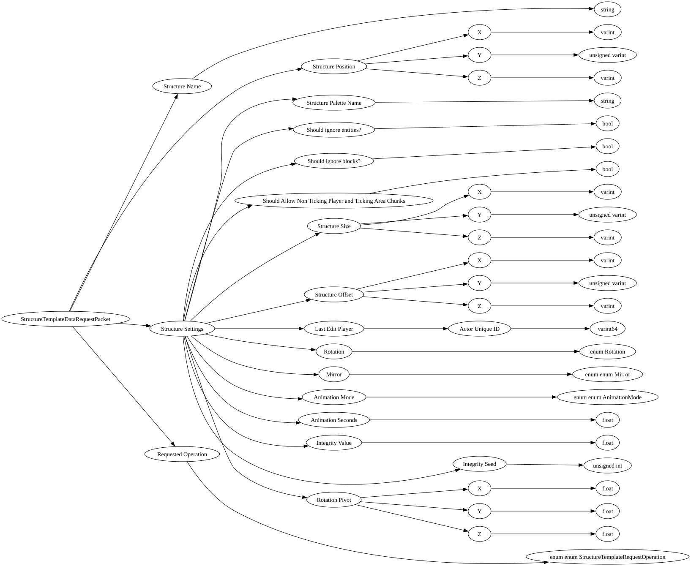

| Purpose: | Used to request structure information from a server. |
| Notes: | This is used to kick off the process of loading and returning a structure in a Tag from the server back to the client. Currently this functionality is completely disabled and does nothing. |

| Field Name | Field Type | Field Constraints | Field Notes |
|---|---|---|---|
| Structure Name | string | ||
| Structure Position | NetworkBlockPosition | ||
| Structure Settings | StructureSettings | ||
| Requested Operation | enum enum StructureTemplateRequestOperation |